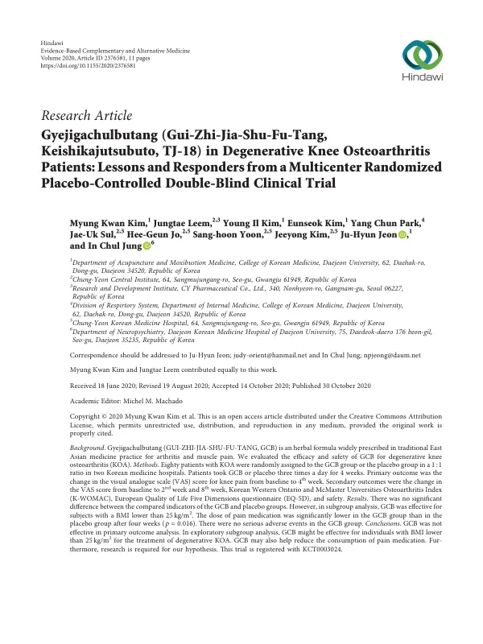

Gyejigachulbutang (Gui‐Zhi‐Jia‐Shu‐Fu‐Tang, Keishikajutsubuto, TJ‐18) in Degenerative Knee Osteoarthritis Patients: Lessons and Responders from a Multicenter Randomized Placebo‐Controlled Double‐Blind Clinical Trial
Kim MK, Leem J, Kim YI, Kim E, Park YC, Sul JU, Jo HG, Yoon Sh, Kim J, Jeon JH, Jung IC
Evidence-Based Complementary and Alternative Medicine 2020(1):2376581

첫 장 · 오픈액세스First page · open access
논문 소개Summary
퇴행성 무릎관절염은 성인에게 가장 흔한 퇴행성 질환입니다. 한국에서 50세를 넘긴 사람의 유병률은 남성 21.1%, 여성 43.8%에 이릅니다. 계지가출부탕은 동아시아에서 관절통과 근육통에 널리 써 온 처방이지만 이 질환에 대한 임상 근거는 없었습니다.
두 곳의 한방병원에서 무릎관절염 환자 80명을 계지가출부탕군과 위약군에 1대 1로 나누어 4주 동안 하루 세 번 복용하게 한 무작위 배정, 위약 대조, 참여자·평가자 눈가림 시험입니다. 일차 평가변수는 4주 뒤 무릎 통증 시각아날로그척도의 변화였고 이차로 2주와 8주의 변화, 한국판 관절염 지수, 삶의 질, 안전성을 보았습니다. 72명이 끝까지 마쳤습니다.
일차 평가변수는 음성이었습니다. 시각아날로그척도는 계지가출부탕군에서 3.93 낮아져 군 안에서는 유의했고 위약군에서는 1.12 올라 유의하지 않았지만, 두 군 사이의 차이는 유의하지 않았습니다. 효과크기는 0.021이었습니다. 기능과 삶의 질에서도 두 군의 차이가 없었습니다.
두 가지가 남았습니다. 하나는 통증이 견디기 어려울 때만 허용한 아세트아미노펜의 사용량이 계지가출부탕군에서 더 적었다는 것입니다. 다른 하나는 사후에 나눠 본 하위군 분석으로, 체질량지수 25 미만인 37명에서는 4주 시점에 두 군의 차이가 유의했습니다. 저자들은 이것이 미리 정해 둔 분석이 아니라 탐색이라는 점을 분명히 하고, 「한증·허증」 환자가 반응자일 수 있다는 가설로만 제시합니다.
이상반응은 계지가출부탕군 24건, 위약군 17건이었고 시험약과 관련이 있을 만한 것은 계지가출부탕군 6건(복부팽만·설사·구갈·혈압상승·간효소 상승·복부불편감)이었습니다. 중대한 이상반응 두 건은 위약군에서 났고 모두 회복했습니다. 다만 4주 시점 눈가림 확인에서 위약군의 37.8%가 자신이 진짜 약을 먹는다고 생각해 두 군에 유의한 차이가 있었습니다. 저자들은 표본 80명이 작았다는 점, 4주는 장기 투여를 보기에 짧다는 점, 생체표지자와 변증을 함께 재지 못한 점을 한계로 들었습니다.
Degenerative knee osteoarthritis is the commonest degenerative condition in adults; in Korea the prevalence past age 50 reaches 21.1% in men and 43.8% in women. Gyejigachulbutang has been widely prescribed across East Asia for joint and muscle pain, but no clinical evidence existed for this condition.
At two Korean medicine hospitals, 80 patients with knee osteoarthritis were allocated 1:1 to Gyejigachulbutang or placebo and took it three times daily for four weeks, in a randomised, placebo-controlled, participant- and assessor-blinded trial. The primary outcome was change in the visual analogue scale for knee pain at four weeks; secondary outcomes covered change at two and eight weeks, the Korean WOMAC index, quality of life and safety. Seventy-two patients completed.
The primary outcome was negative. The visual analogue scale fell by 3.93 in the treatment group, significant within that group, and rose by 1.12 in the placebo group, which was not significant — but the difference between groups was not significant. The effect size was 0.021. Function and quality of life showed no between-group difference either.
Two findings remained. Acetaminophen, permitted only for intolerable pain, was used less in the Gyejigachulbutang group. And a post hoc subgroup analysis found that among the 37 participants with a body mass index below 25, the two groups differed significantly at four weeks. The authors are explicit that this was exploratory rather than pre-specified, and offer it only as a hypothesis that patients of "cold and deficiency pattern" may be the responders.
Adverse events numbered 24 in the treatment group and 17 in the placebo group; six in the treatment group were judged likely related to the study drug (abdominal distension, diarrhoea, dry mouth, raised blood pressure, raised alanine aminotransferase and abdominal discomfort). Two serious adverse events occurred in the placebo group and both resolved. At the four-week blinding check, however, 37.8% of the placebo group believed they were taking the active drug, a significant difference between groups. The authors list as limitations the small sample of 80, the four weeks being too short to examine long-term administration, and the absence of biomarkers and pattern identification.
인용Cite
Kim MK, Leem J, Kim YI, Kim E, Park YC, Sul JU, Jo HG, Yoon Sh, Kim J, Jeon JH, Jung IC. Gyejigachulbutang (Gui‐Zhi‐Jia‐Shu‐Fu‐Tang, Keishikajutsubuto, TJ‐18) in Degenerative Knee Osteoarthritis Patients: Lessons and Responders from a Multicenter Randomized Placebo‐Controlled Double‐Blind Clinical Trial. Evidence-Based Complementary and Alternative Medicine. 2020;2020(1):2376581. doi:10.1155/2020/2376581